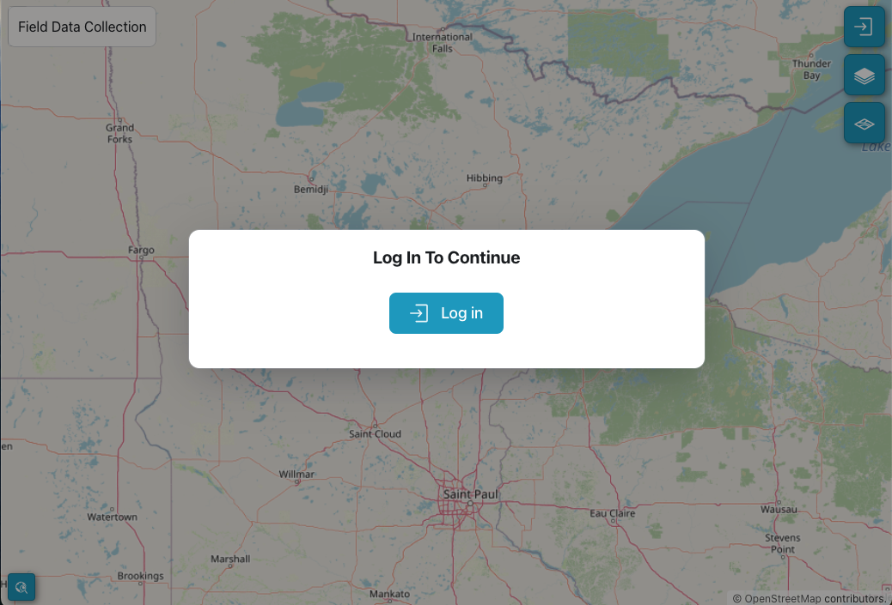
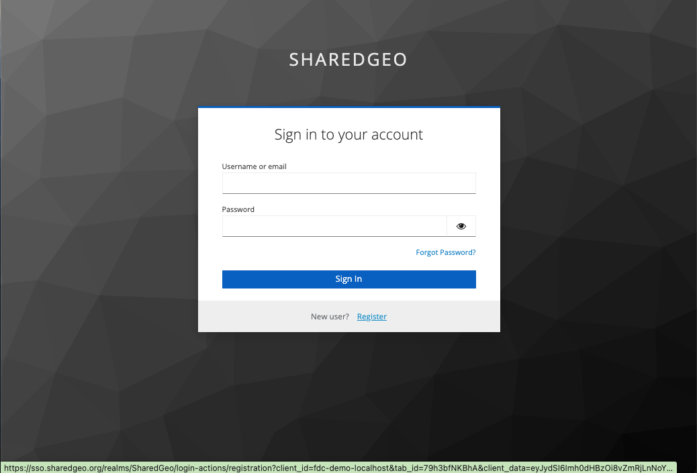
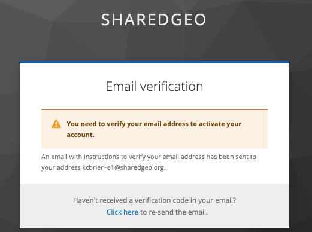
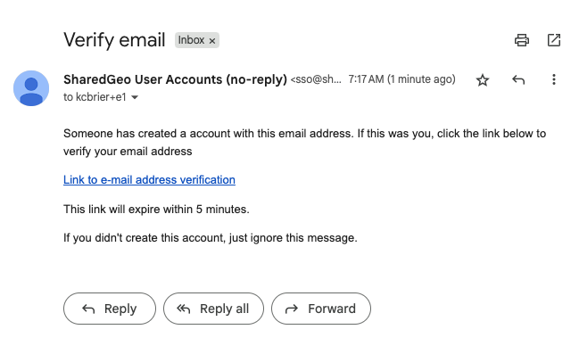
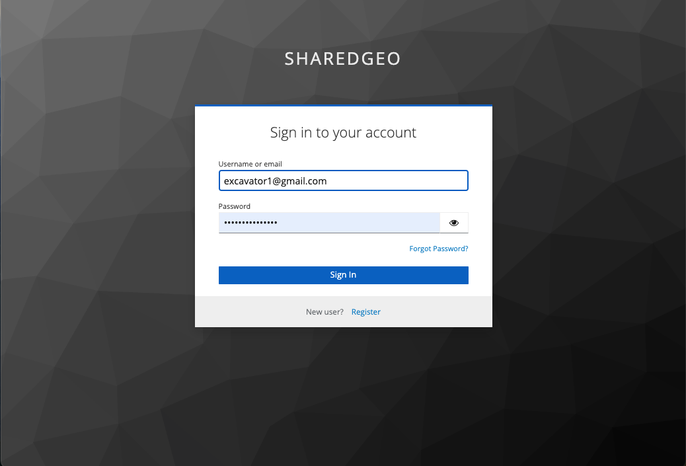
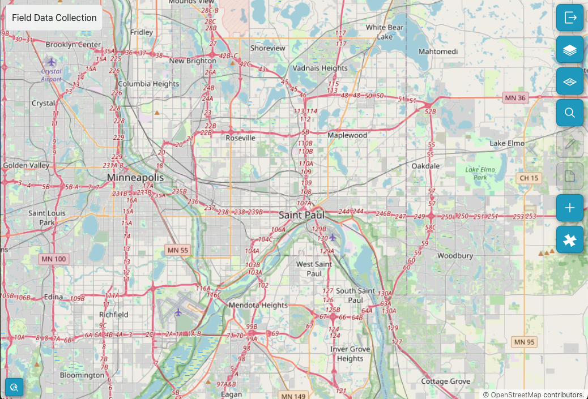

Getting Started
Field Data Collector (FDC) is a map based application that addresses the inefficiencies in current excavation and utility locating processes, filling the need for GNSS-enabled devices to streamline tracking and documentation. FDC aims to support excavators, locators, engineers, and emergency responders by providing a platform to collect critical dig site information. FDC complements the Fusionview application which displays 811 dig tickets and GIS data. FDC allows users to add, edit, and document features within the boundaries of the 811 ticket. FDC helps to reduce silos, minimize damage risk, increase efficiency, and enhance communication in utility management.
Open FDC and select the Log In button.

FDC Landing Page
Register and Log In
If this is your first time using FDC, click the Register link below the sign in form. Enter your information and select Register.

Register
If successful, you will see a message alerting you to verify your email. You must do this before you can sign in.

Verify your email
Open your email application and find the email from SharedGeo User Accounts. If you don’t see it after a few minutes, check your Spam folder. If you can’t find it, go back to the Registration popup and select the option to Resend Link. Once you get the email, select Link to e-mail address verification.

Verify your email
You can now Log In.

FDC Login
Tools
Once you are logged in, you see the FDC Toolset, including 2 inactive options:
Logout
Layers
Basemaps
Search
Add/Edit features
Manage documents
Strike reporting
Documentation
In the bottom left is a button to Zoom to Location.
In the bottom right the Latitude and Longitude of your current cursor position is displayed.

FDC Tools
Caution
The FDC application is designed to supplement your 811 ticket. Not all utility information has been shared and some features that exist inside your ticket boundary may not be shown.
Last Updated: Dec 03, 2025